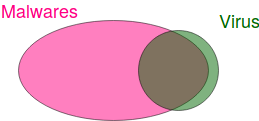
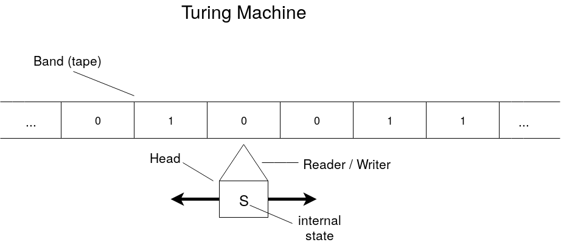
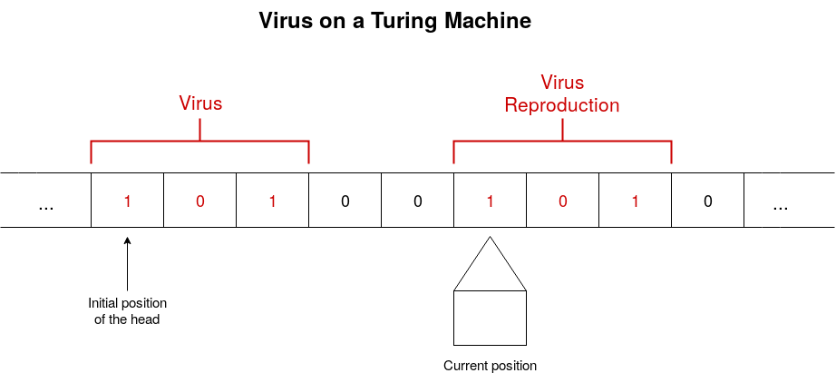

What is a computer virus ?
- 15 Mar 2019
- Manuel Capel
- Tags: virus
There seems to be a bit confusion about what is a computer virus, so here an article clarifying it hopefully. A computer virus is not necessarily a malware, and there are many other types of malwares than viruses. This is better summarized with a small schema:

Most viruses are malwares currently, but many malwares are not viruses.
So the question still holds: What is precisely a virus? Tada… suspens… it’s a program that creates a variant of itself in a given environment.
NB:
- a variant of itself can be precisely itself, but doesn’t have to
- the environment may be a computer, or a browser in the case of a javascript virus etc.
A bit of history
The word virus applied to computer programs was first coined by Leonard Adleman as he was supervising the PhD of Fred Cohen at the University of South California (4 miles from where I am writing this article btw.). This dissertation was completed in 1986 and was the first to formalize computer viruses. However, there were already viruses at that time, like Elk Cloner. At that time it was just a timid beginning, nothing compared to what is going on nowadays…
Formalization
Before diving into the formalization of a virus, we should first introduce what is a Turing Machine
Formalization of a Turing Machine
A Turing Machine is the abstraction of a computer program (whereas the formalization of a computer would be a Universal Turing Machine). So what is a Turing Machine? There are many ways of formalizing it. You can get a good overview in this Wikipedia article. Basically, it consists in two parts:
- a band (also called tape) containing symbols, let say 0 and 1. This band is of infinite length
- a head reading symbols on the band. This head has a Reader/Writer that can read the current symbol on the band and eventually replace it by another one, and a state. Depending on the current read symbol and its current state, the head can perform 3 actions:
- Write another symbol on the current position of the band
- Move of 1 position on the right or on the left (or stay at the same place)
- Update its own internal state
Illustration of a Turing Machine:

If the head comes to a point where it does nothing, then the program is executed and halts.
The formalization we adopt here for a Turing Machine is the following:
- \(S(t)\): state of the head at time (indice) \(t\)
- \(C(t, i)\): content of the cell \(i\) (on the band) at time \(t\)
- \(P(t)\): position of the head (indice of the cell where it’s positioned) at time \(t\)
Formalization of a virus
Now the question is, what is a virus on a Turing machine? It’s simply a sequence on the band of a Turing Machine \(M\) that gets reproduced to itself or a variant (evolution) of itself. Note that the same sequence on the band of another Turing Machine \(M'\) may not reproduce: a virus is a virus only relatively to a given machine (environment).
Here a schematic illustration: 
NB: The virus reproduction can be an exact copy of the virus itself, or a variant of it. On the machine \(M\), a virus \(v\) can produce first a variant \(v_1\) of itself, \(v_1\) producing then a variant \(v_2\) of itself etc. The set \(\{v, v_1, v_2, \dots\}\) is called the viral set of \(v\). A viral set can be be of size 1 (the virus produces each time an exact copy of itself), of size 2, 3 etc. until infinity, means there are in this case infinitely many variations of the virus. The viral set of a virus \(v\) is noted \(V\).
Now the formal definition of a virus… Brace yourself and don’t worry, the explanation follows:
\(V\) is a viral set (for a Turing Machine \(M\)) if: \(\forall v \in V: \\ [\exists t, j \in \mathbb{N}\space such\space that: \\ P(t) = j\space (1.1) \\ and\space S(t) = S(0)\space (1.2) \\ and\space \big(C(t, j), \dots, C(t, j + \mid v\mid -1)\big) = v\space (1.3)] \\ \Rightarrow \\ [\exists v'\in V, t', j' \in \mathbb{N} \space with\space t'>t \space such\space that: \\ j' + \mid v'\mid \leq j\space or\space j + \mid v\mid \leq j'\space (2.1) \\ and\space \big(C(t', j'),\dots,C(t', j'+\mid v'\mid-1)\big)=v'\space (2.2) \\ and\space \exists t'' \space such\space that:\space \\ \hspace{3em} t<t''<t'\space \\ \hspace{3em} and\space P(t'')\in \{j',\dots,j'+\mid v'\mid-1\}\space (2.3)]\)
Explanation
If:
- 1.1: at time \(t\), the head of \(M\) is at the cell \(j\)
- 1.2: and the head is at its initial state
- 1.3: and the cell \(j\) and the following cells contain \(v\) [ \(\mid v\mid\) is the length (number of fields) occupied by \(v\) on the band]
Then later at time \(t'\) the head is at the cell \(j'\) such that:
- 2.2: \(j'\) and the following cells contain \(v'\)
- 2.1: the cells containing \(v\) and \(v'\) are separated, they don’t overlap
- 2.3: the head was positioned at a cell belonging to \(v'\) at a time \(t''\) after \(t\) but before \(t'\) (\(t'\) is the time where the head finishes to write \(v'\) on the band, so it just means that the head was previously writing \(v'\))
And because \(v\) and \(v'\) belong the the same viral set \(V\), \(v'\) is an reproduction/evolution of \(v\).
Remarks
- A virus doesn’t have to contain a damaging payload. It’s not part of the definition.
- In its article Computer Viruses: Theory and Experiments (1987), Fred Cohen gives an example of a legitimate virus: a compiler compiling a copy of itself. Hence in the first figure, the set of viruses is not completely contained inside the set of malwares.
- There is no antivirus capable of detecting any virus. This can be easily proved by contradiction. Imagine such an antivirus, let’s call it AV, exists. Now imagine a programm w that reproduces itself if AV says it’s not a virus: then w is by definition a virus ; and doesn’t reproduce itself if AV says it’s a virus: then w is by definition not a virus: the existence of such an antivirus would lead to a contradiction.
Conclusion
This article is a purely formal definition of what is (and by contrast what is not) a virus. It bases in a large part on the book Computer Viruses: from theory to applications by Éric Filiol which I warmly recommend. I hope it demystified a bit the notion of computer virus and made you curious. I will probably come later with more practical articles about viruses, but at least we know now what we are talking about.